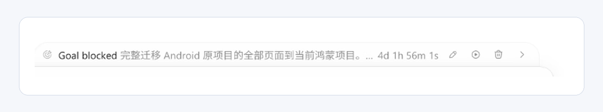
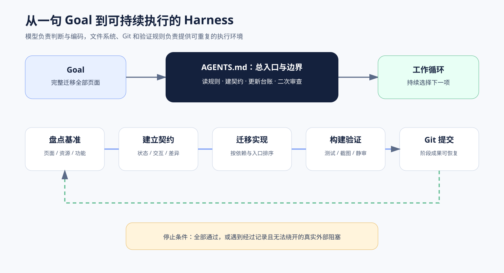
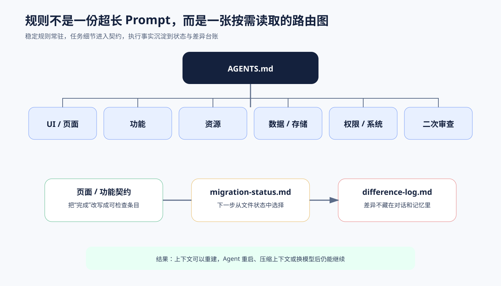
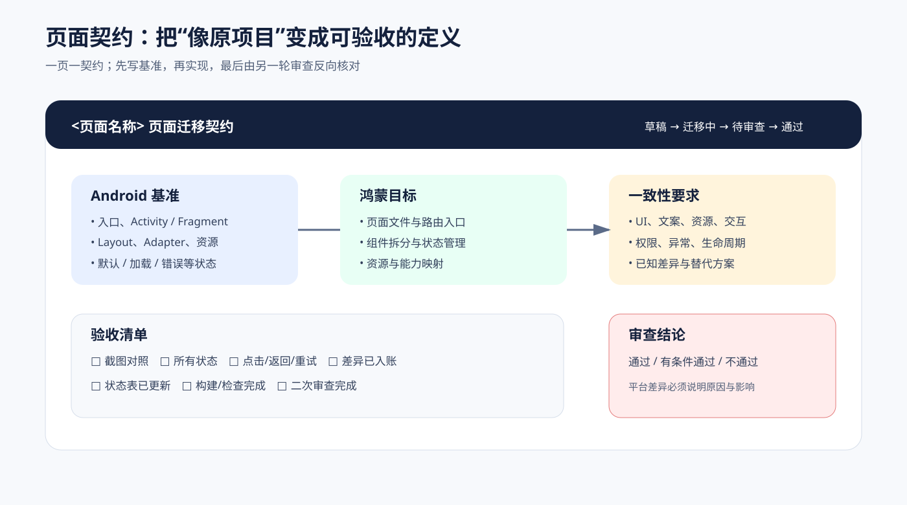
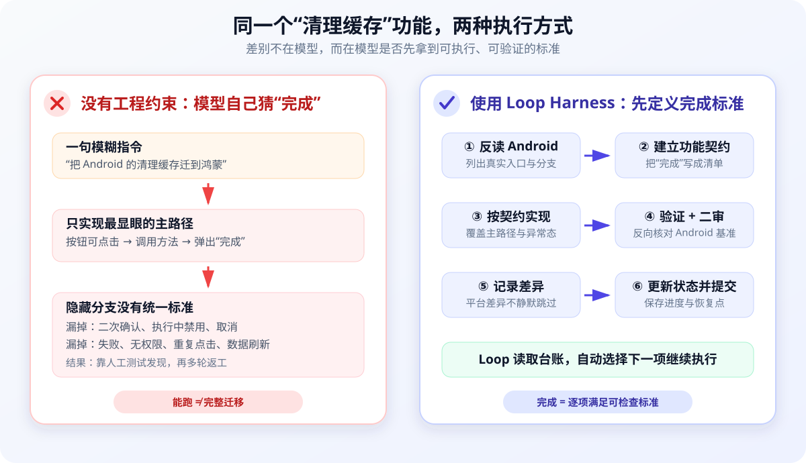
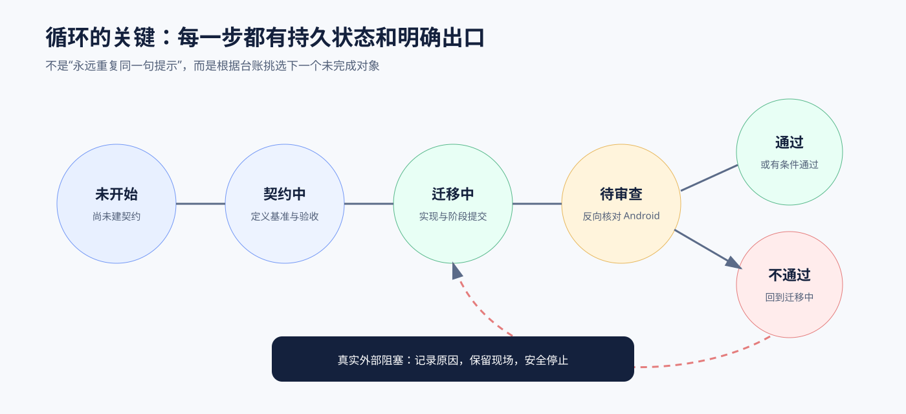

最近项目中，我需要把一个 Android 项目的全部页面迁移到鸿蒙。目标不是重新设计，而是尽可能完整地复刻原项目的页面、UI、交互、状态和跳转。
实际效果比我预想得好：我只设置了一次总 Goal，中间没有继续指挥，Agent 持续执行了四天多。阶段结果里，鸿蒙界面的主体完成度已经接近九成。

这里最重要的不是“四天”这个数字，而是：Agent 为什么能够在没有人持续补充指令的情况下，知道下一步该做什么，并且没有把大型迁移变成一堆不可追踪的改动？
先把两个概念说清楚：Harness Engineering 与 Loop Engineering
这两个词经常一起出现，但关注的层级不同。
- Harness Engineering（执行环境工程）：围绕一次 Agent 执行，为它准备工具、上下文、规则、权限、验证方式，以及“什么才算完成”。它解决的是：这一轮怎样做对？
- Loop Engineering（循环工程）：位于 Harness 的外层，负责反复启动任务、读取上轮状态、选择下一步、调用验证、记录结果，并决定继续还是停止。它解决的是：做完这一轮以后，下一轮怎样自动开始？
可以把它们理解成：Harness 是给 Agent 铺好的跑道和护栏，Loop 是让它一圈圈继续跑下去的调度系统。我的实践把两者结合在了一起：仓库里的规则、契约和验证组成 Harness；外部 Loop Runner 则重复驱动“读取状态 → 选择任务 → 实现 → 验证 → 记录 → 下一轮”。
先说结论：Loop 不等于重复调用模型
如果只是把同一句提示放进 while 循环，Agent 很快就会遇到几个问题：
- 不知道整个项目还有多少页面；
- 不知道当前页面做到什么程度；
- 上一轮说“完成”，下一轮无法验证；
- 上下文压缩或进程重启后，执行状态丢失；
- 为了继续推进，可能开始猜测、简化，甚至把平台不支持的能力标成完成；
- 大量改动堆在一起，一旦失败很难回滚。
我理解的 Harness，不是某一条神奇 Prompt，而是围绕模型搭建的一层工程环境：规则负责约束，契约负责定义完成，文件负责保存状态，工具负责验证，Git 负责提供恢复点。

模型仍然负责理解代码、做判断和实现迁移，但它不再只依赖对话记忆。每一轮都能从仓库中的文件重新得到三个答案：
- 总目标是什么；
- 当前做到哪里；
- 下一步应该选哪一项。
一、先用 AGENTS.md 固定总边界
这套工作流的入口是项目根目录下的 AGENTS.md。它不承担每个页面的全部细节，而是声明长期不变的边界：
- Android 原项目是事实基准；
- 默认只修改鸿蒙目标项目，不修改 Android 源项目；
- 迁移前先判断任务属于 UI、功能、资源、数据还是权限；
- 没有页面或功能契约时，不直接开始大规模编码；
- 每个迁移任务完成后都要做二次审查；
- 平台差异必须进入差异日志，不能只留在聊天记录里；
- 禁止主观重设计，禁止只迁移 happy path；
- 未验证或平台不支持的能力，不能标成已完成。
它更像仓库内的“执行宪法”。Goal 可以变化，页面可以增加，但这些边界在每一轮都成立。
二、把长规则拆成按任务读取的路由
我没有把所有要求都塞进一份超长提示，而是按迁移类型拆成多份规则：
|
|
Agent 先判断当前任务类型，再读取对应规则。迁移一个页面时，通常需要 UI、资源和功能规则；涉及本地存储或系统能力时，再加载数据和权限规则。
每份 Markdown 的职责尽量保持单一：
| 文件 | 主要职责 |
|---|---|
AGENTS.md |
项目级总入口，声明事实基准、修改边界、执行顺序和禁止事项 |
README.md |
迁移文档索引，告诉 Agent 不同任务应该继续读哪些规则 |
ui-migration-rules.md |
约束布局、状态、交互、截图对照和视觉一致性 |
feature-migration-rules.md |
约束功能入口、调用链、输入输出与成功/失败分支 |
resource-migration-rules.md |
约束图片、图标、颜色、字符串、字体和资源复用 |
data-migration-rules.md |
约束字段语义、默认值、缓存、排序、读写和异常数据 |
permission-migration-rules.md |
约束权限申请时机、拒绝处理、系统能力和降级路径 |
review-rules.md |
规定二次审查必须反向核对 Android 基准，并输出明确结论 |
migration-status.md |
保存全局进度，供下一轮选择优先级最高的未完成任务 |
difference-log.md |
持久记录无法完全等价的差异、原因、影响和处理决策 |
page-contract-template.md |
为每个页面生成可检查的 UI 与交互标准 |
feature-contract-template.md |
为每个功能生成输入、输出、分支和异常标准 |

这样做有两个直接收益：
- 减少无关上下文：当前任务只加载当前需要的规则；
- 让约束可维护：发现遗漏时修改对应规则，而不是重新发明一条越来越长的总 Prompt。
三、先盘点，再按依赖关系决定迁移顺序
总 Goal 的第一阶段不是马上写 ArkTS，而是同时盘点两边的工程。
Android 侧需要找到的不只是 Activity 和 Fragment，还包括：
- Layout；
- Adapter / ViewHolder；
- 自定义 View；
- 弹窗和菜单；
- 列表项；
- 图片、图标、颜色、字符串和状态资源；
- 页面入口、跳转关系以及相关功能调用链。
鸿蒙侧则要盘点已有页面、路由、组件、资源和目录结构。两份盘点结果合并成迁移总清单，写入 migration-status.md。
迁移顺序也不是简单按文件名遍历，而是优先：
- 主入口和首页；
- 一级页面；
- 公共组件；
- 高复用资源；
- 被多个页面依赖的功能；
- 最后处理低频页面和平台差异较大的能力。
这样可以尽早打通主链路，也能减少同一组件被重复实现。
四、先给大模型一个“标准”，再让它开始实现
大模型其实并不知道我们口中的“完成”“还原”或“1:1”具体指什么。如果只说“把这个页面复刻出来”，它只能根据通用经验自行猜测：能显示主界面，也许就会被当成完成；至于空状态、按压态、错误分支、弹窗和返回行为，则很容易被遗漏。
所以关键不是要求模型自己领会标准，而是先把标准写出来。我采用的落地方式，是在页面实现前，根据统一模板建立一份页面迁移契约：
|
|
契约至少记录：
- Android 页面入口、源码、Layout、Adapter 和资源；
- 默认、加载、空数据、错误、禁用、选中、按压、弹窗和菜单状态；
- 鸿蒙页面文件、路由、组件拆分和状态管理；
- 布局、间距、字号、颜色、图标、文案和动画要求；
- 点击、长按、返回、刷新、重试、跳转和权限触发；
- 已知平台差异；
- 截图对照和验收清单。

契约的价值是把“复刻原页面”拆成一组 Agent 可以逐项核对的事实。它既是实现说明，也是后续二次审查的输入。
功能迁移同样有独立契约，重点记录输入、输出、默认值、排序、过滤、缓存，以及成功、失败、取消、权限拒绝、设备不支持、重复执行和生命周期分支。
五、一个小例子：迁移“清理缓存”功能
假设要迁移一个很普通的“清理缓存”功能。用户点击按钮后，页面需要二次确认，执行时显示处理中状态，成功后刷新缓存大小；如果没有权限、清理失败或用户取消，还要有对应反馈。
没有这套工程时，常见的指令可能只有一句：“把 Android 的清理缓存功能迁到鸿蒙。”模型很可能先做出一个能点击的按钮，调用清理方法后弹出“完成”。主路径看起来通了，但二次确认、执行中禁用、取消、失败、重复点击和数据刷新都没有统一标准。下一轮模型也不知道上轮漏了什么，最后只能靠人逐项试出来再返工。
有了这套工作流后，执行方式会变成：
- 从 Android 代码反向列出入口、确认弹窗、调用链和全部结果分支；
- 在功能契约中写明输入、默认值、成功、失败、取消、无权限和重复点击行为；
- 在状态台账中把该功能从“契约中”推进到“迁移中”；
- 实现后按契约验证，二次审查再从 Android 基准反向核对；
- 发现平台 API 不同，就写入差异日志，而不是静默改掉行为；
- 验证通过后更新台账并提交 Git，Loop 再选择下一项。

同一个模型、同一个功能，区别不只是“Prompt 写得更长”，而是从模型自己猜什么叫完成，变成了仓库里已经存在可读取、可验证、可恢复的完成标准。
六、用状态台账驱动下一轮，而不是依赖聊天记忆
migration-status.md 是整个循环的调度中心。页面和功能会在这些状态之间移动：
|
|

Agent 每轮都可以从台账中选择优先级最高、依赖已满足、尚未完成的对象。执行过程中同步更新状态，因此即使上下文被压缩，下一轮仍能从文件恢复现场。
这也是“人不在，AI 干活不能停”的基础：不是要求模型永远记住一切，而是让它随时能够重新读取事实并继续。
七、差异日志不是失败记录，而是防止“假完成”的护栏
Android 和鸿蒙的控件、权限模型、生命周期和系统能力并不完全相同。要求百分之百使用相同技术方案并不现实，但业务意图和用户体验应尽可能等价。
我的处理方式是：
- 先寻找鸿蒙上的等价实现；
- 能迁移的部分继续推进，不因局部不确定而停住；
- 无法等价时写入
difference-log.md； - 记录 Android 基准、鸿蒙实现、原因、影响范围、决策和后续动作；
- 审查时给出“通过、条件通过或不通过”，不允许含糊地写“基本完成”。
差异进入持久台账后，Agent 就不需要为了维持“任务在前进”的表象而掩盖问题。
八、二次审查必须反向阅读 Android 原实现
第一次实现很容易受到当前鸿蒙代码的锚定。如果 Review 只看迁移后的代码，往往只能检查代码风格，很难发现“原项目里其实还有一个状态没迁”。
所以 review-rules.md 要求二次审查重新从 Android 侧开始：
- 重新阅读 Android 原实现，列出真实存在的元素、分支和状态；
- 对照鸿蒙实现逐项确认；
- 核对图片、图标、颜色和文案是否被近似资源替代；
- 核对点击、长按、返回、取消、确认、失败和重试；
- 核对差异是否有原因、影响和替代方案；
- 明确给出审查结论。
它不是普通的 Code Review，而是一次迁移一致性 Review。
九、Git 阶段提交给长任务提供恢复点
四天级别的任务不能等到最后再提交。Agent 连续工作时间越长，未提交的改动就越多；一旦出现进程异常、误操作或工作区损坏，前面完成的代码就可能一起丢失。为此，我在 Goal 中明确要求：每完成一个阶段或一组页面，就进行一次 Git 提交。
阶段提交有四个作用：
- 及时把已经验证的代码保存到版本历史，避免意外丢失；
- 将大任务切成可以回滚的小批次；
- 让后续审查能看到每组页面的修改边界；
- Agent 中断或走错方向时，可以回到最近一个可信节点，而不是推翻四天的全部工作。
通常每组页面会经历：
|
|
如果构建环境暂时不可用，也不能静默跳过：需要记录原因，并继续完成可做的静态审查。
十、我实际下发的 Goal 怎么写
这次 Goal 的核心不是一句“把 Android 项目迁到鸿蒙”，而是同时写清楚范围、执行规则、停止策略和完成标准。压缩后可以概括为：
|
|
这里有一个很重要的措辞：不要因为缺截图、命名不确定或实现路径不确定而停止。 Agent 可以做合理假设，但必须记录依据；只有遇到无法通过代码、工具或其他任务绕开的真实外部阻塞，才安全停下来。
十一、为什么这套方式能工作
回头看，这套流程真正解决了长任务的五个问题：
1. 范围可枚举
先盘点全部页面和入口，任务不再是模糊的“迁完一个 App”，而是有限集合上的状态推进。
2. 完成可验证
契约里同时包含正常路径、异常路径、视觉状态和交互行为，避免把“能打开”当成“已迁移”。
3. 状态可恢复
迁移状态、审查结论和平台差异都写在仓库中，不依赖某一轮对话上下文。
4. 失败半径可控制
阶段构建、二次审查和 Git 提交让每组页面成为独立恢复点。
5. Agent 有自主推进权，但没有随意改目标的权力
它可以决定下一页如何实现、遇到差异先做哪一部分，却不能主观重设计、隐藏差异或把未验证能力标成完成。
这正是我对 Harness Engineering 的理解：不是让模型变得更自由，而是让它在清晰边界、持久状态和自动反馈中持续行动。
最后
这次实践让我感受最明显的一点是：大模型能不能长时间工作，关键不只在模型本身，更在模型外面有没有一套足够清晰的 Harness。
当目标、约束、状态、验证和恢复点都落到仓库里以后，Agent 才真正从“一次性回答问题”变成了“持续推进工程任务”。
一次 Goal，四天执行，界面主体接近九成。真正起作用的不是让 AI 不停生成代码，而是先把它工作的轨道铺好。
做到这里，我也在某种程度上重新理解了 AI：它不再只是靠一轮轮 Prompt 对话来干活，也可以发展成一套能够自循环的系统。这应该是一项长期工程。AI 是个人能力的放大器，有 Token，也有想法，个人真的可以做很多事情。
文中使用的工作流模板已经开源：android-harmonyos-loop-harness。
有不了解 Harness 和 Loop 循环工程的，在这里推荐一篇文章，花叔写的 《Loop Engineering 橙皮书》，写得非常好。